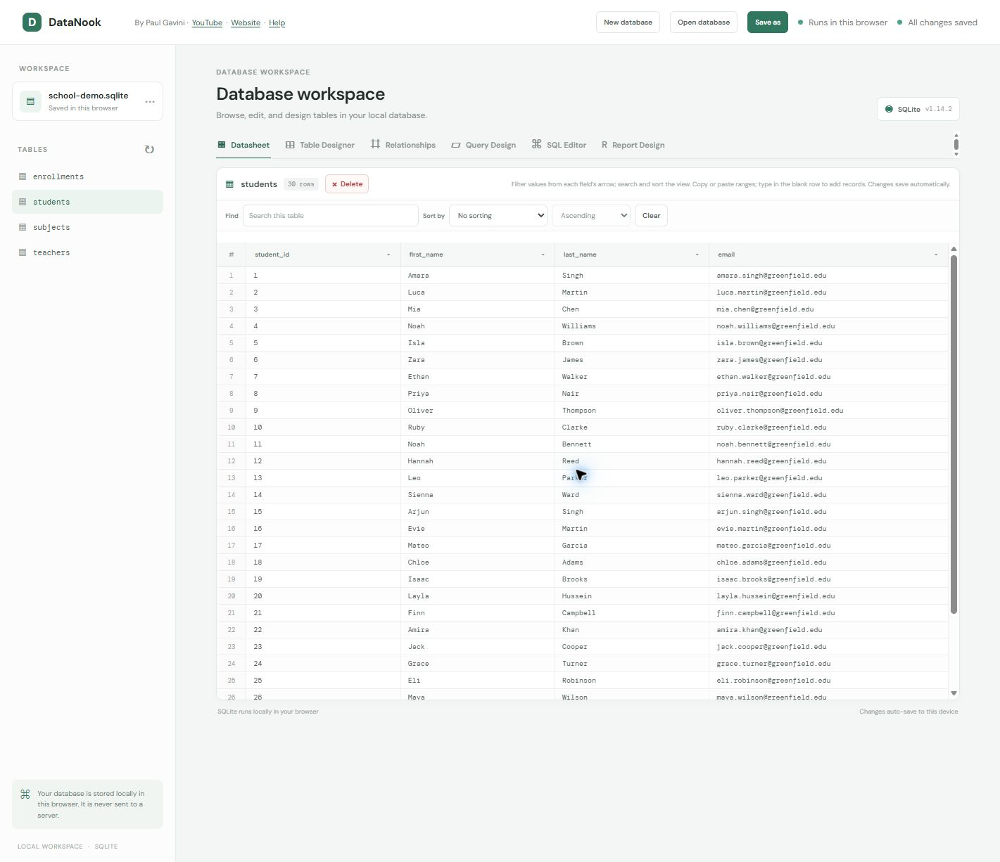
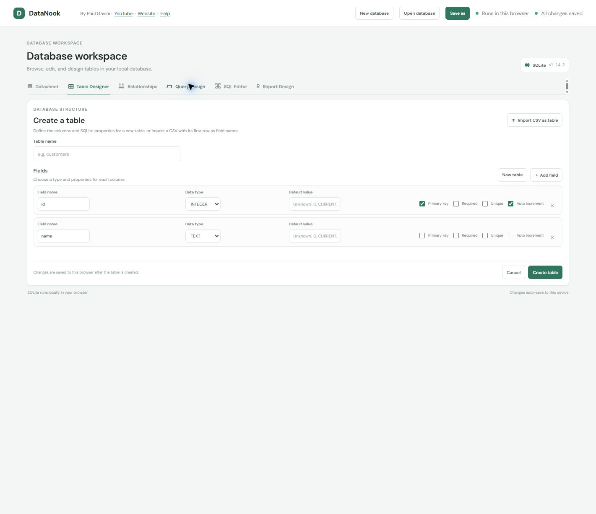
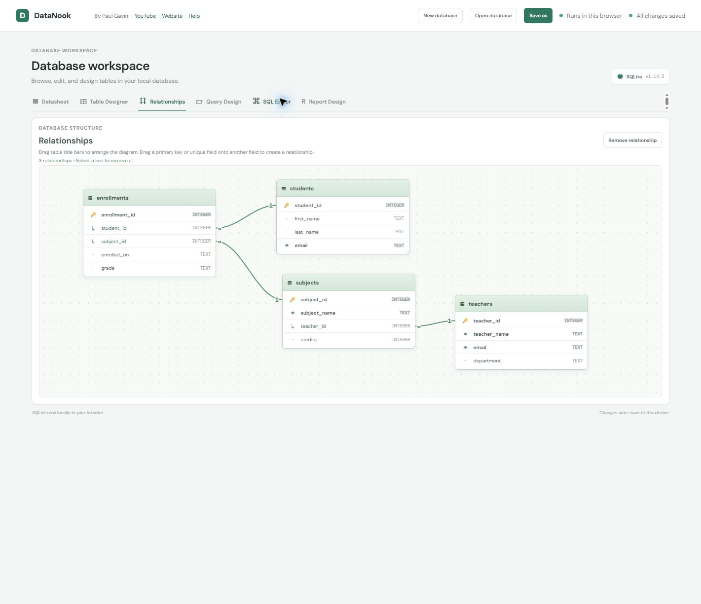
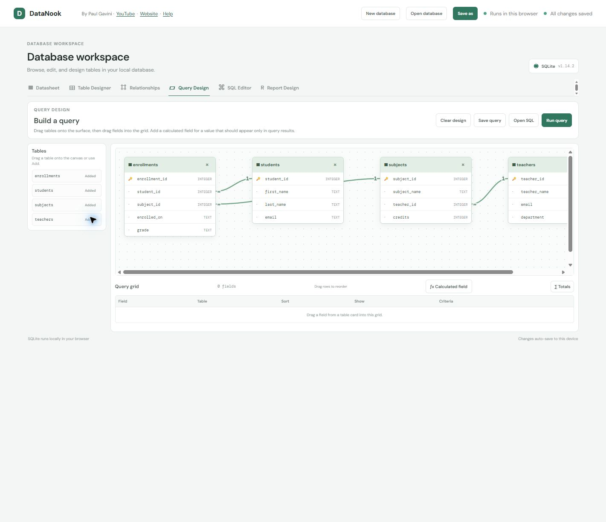
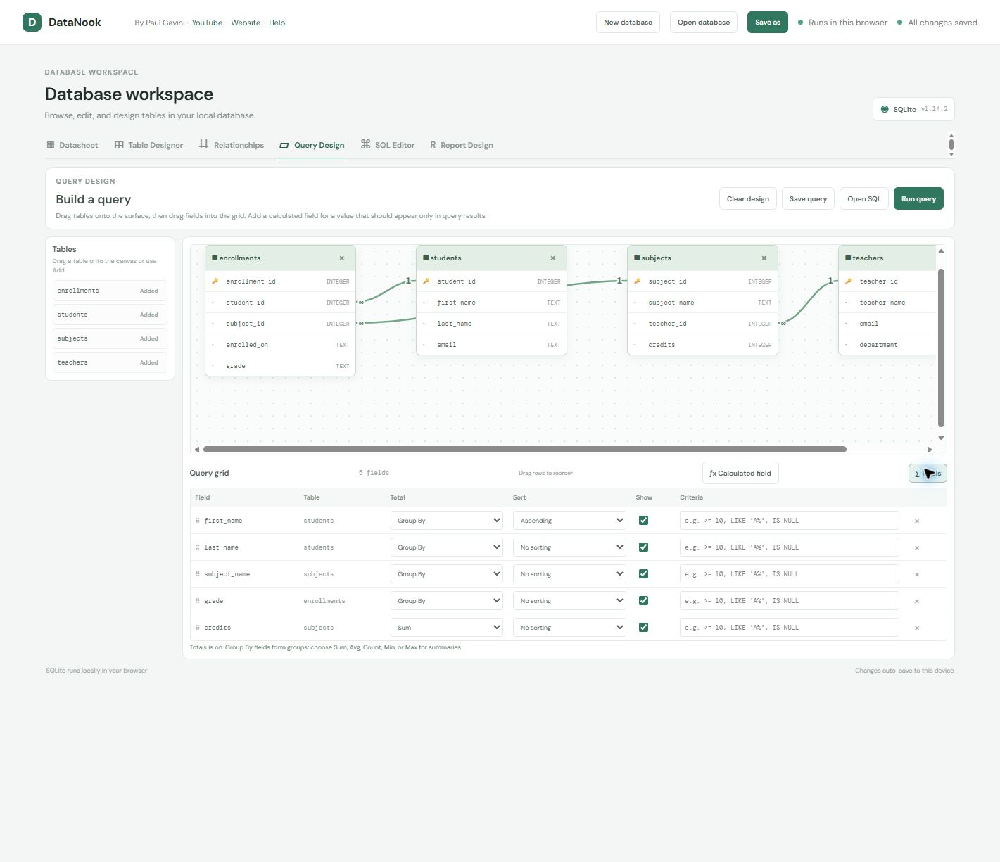
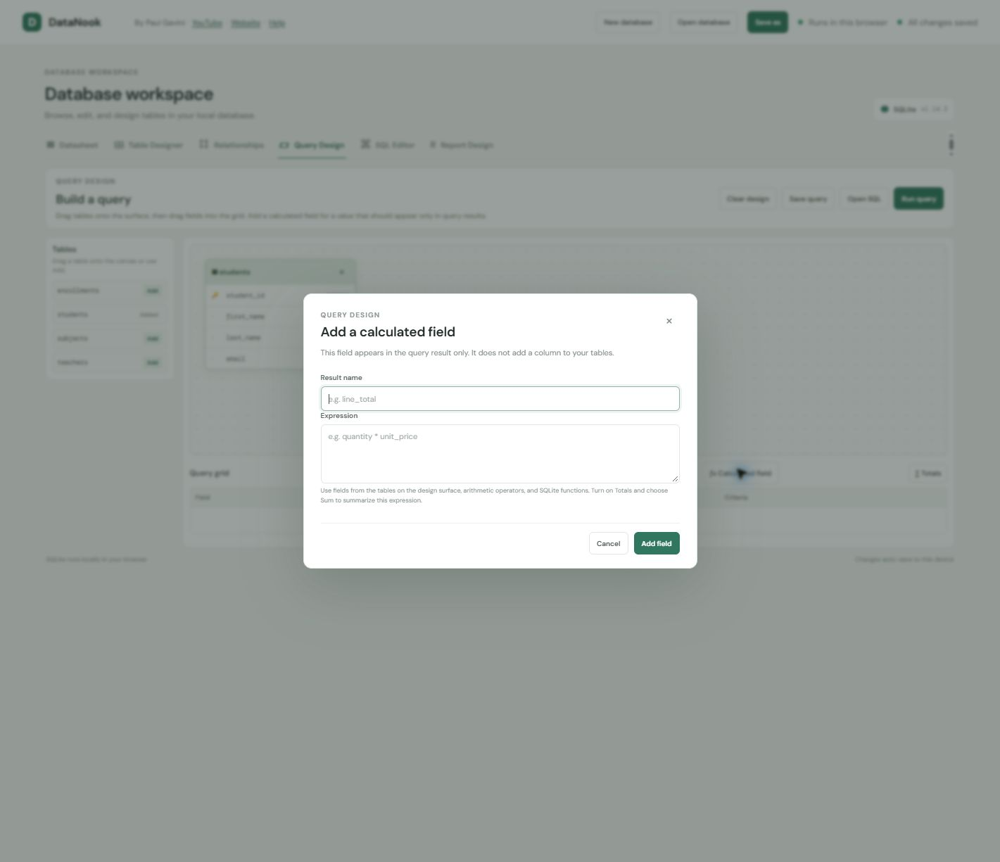
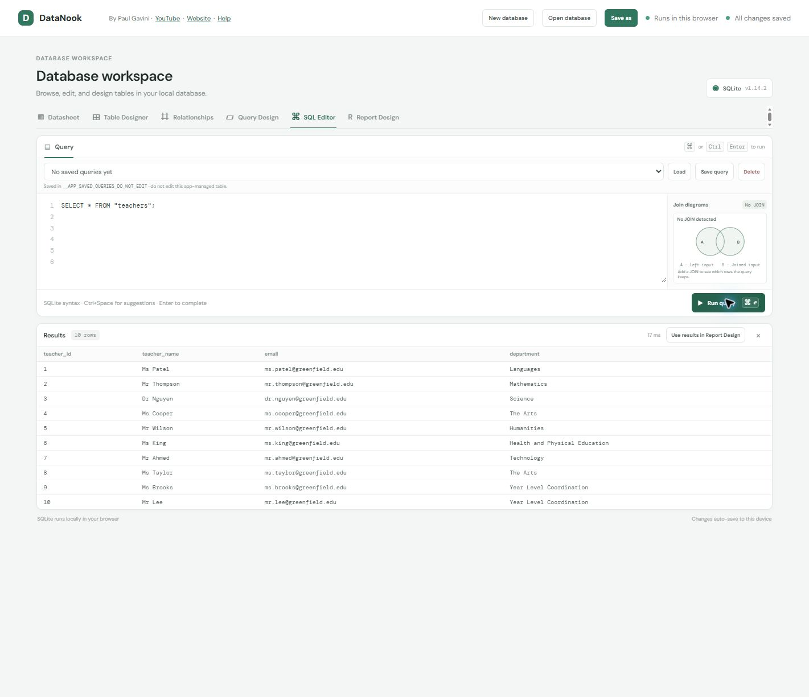
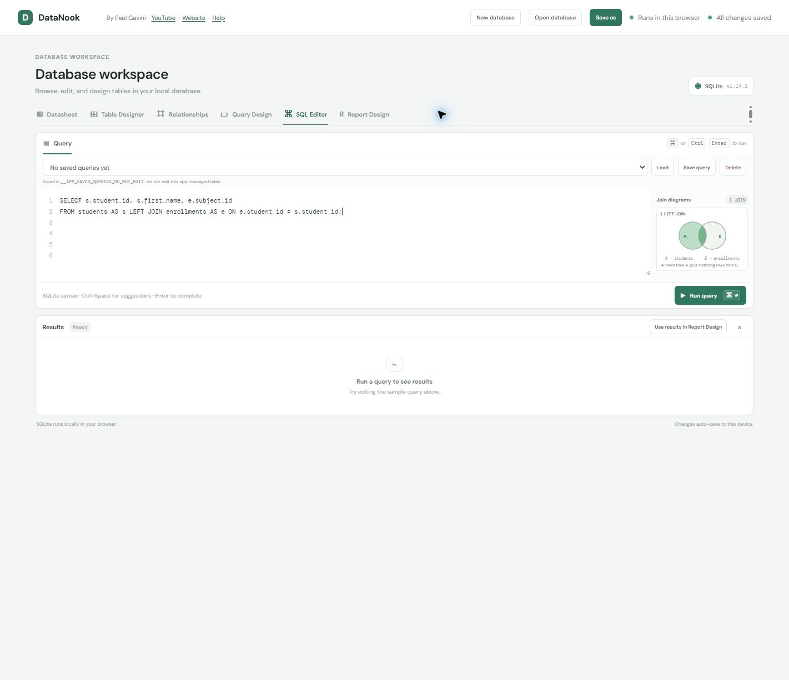
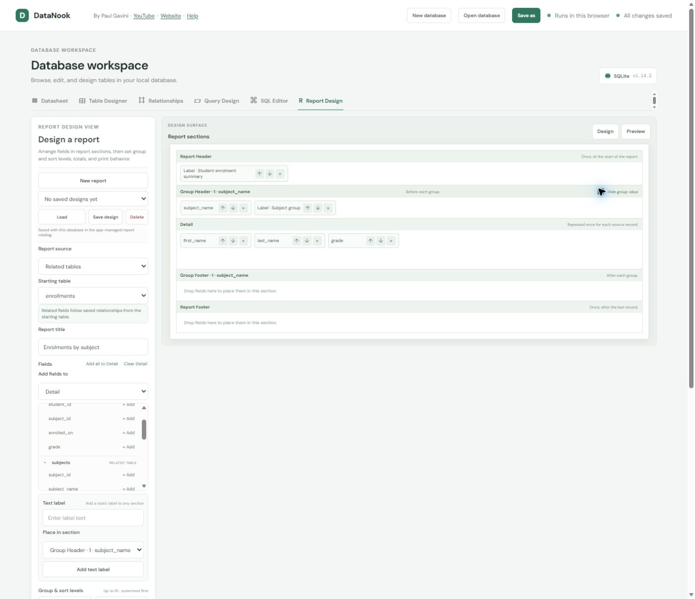
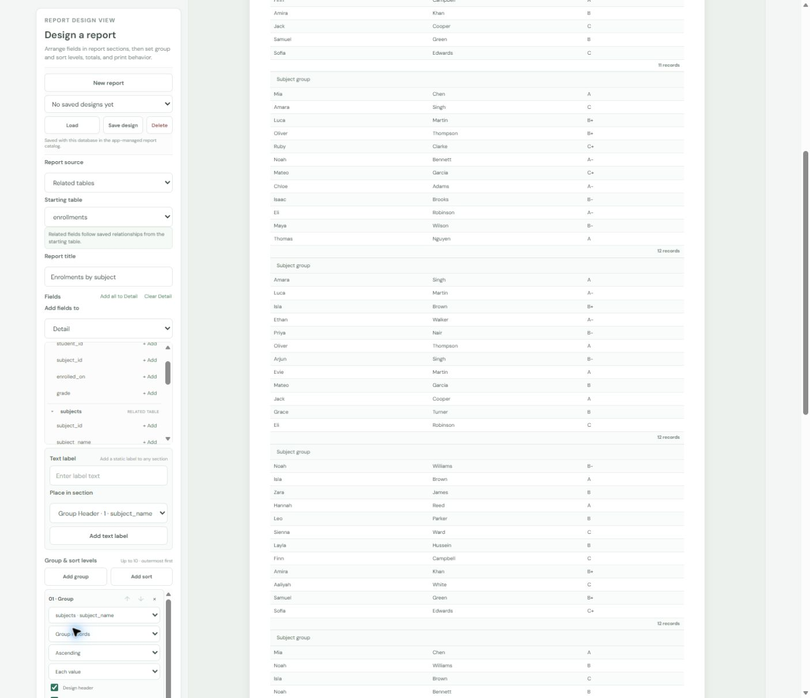

DataNook database workspace: a feature-by-feature guide
DataNook is a browser-based SQLite workspace. This guide explains the controls for browsing data, designing tables, relating tables, building queries, writing SQL, and creating grouped reports. Each image is a screenshot of the live app in Edge; select an image to open it at full size.
Database files and saving
The top bar has the database-level controls:
- New database replaces the open workspace with a blank SQLite database and asks where to save its first file copy.
- Open database opens an existing
.sqlite,.sqlite3, or.dbfile. The app asks before replacing the current database. - Save as creates a portable copy you can back up or move to another device.
Table edits and database changes autosave to the current browser profile. In Edge, file access may also let the app keep writing to the opened file; otherwise, the browser copy is autosaved and Save as downloads a portable copy. The green status at the top reports whether changes are saved.
The left sidebar shows the current database name and the list of tables. Choose a table there to open it in Datasheet. The circular-arrow button refreshes the table list after a schema change.
Datasheet: browse, search, and edit rows

- Select a table from the left. Each field heading has a button to inspect that field in Table Designer and an arrow to filter its values.
- Find searches across the selected table. Use a field’s arrow to choose distinct values; filters on multiple fields combine.
- Sort by and Sort order sort the displayed rows. Clear resets the search, filters, and sort.
- Click a cell to edit it. Type in the trailing blank row to add a record. Changes save automatically.
- Copy a cell or range, or paste tab-delimited cells from a spreadsheet into the grid to enter several values.
- The red Delete button removes the selected table and its records after confirmation. Remove any relationships pointing to it first.
Search, sorting, and filters change only what is displayed; they do not update the stored rows. Clicking a field heading opens that field’s table definition in Table Designer.
Table Designer: define a table or import a file

Enter a table name and define one row per field. For each field, set its name, SQLite type, optional default, and constraints:
- Primary key identifies each row. Auto increment is available for integer keys.
- Required prevents a field from being left empty; Unique prevents duplicate values.
- Add field and Remove field change the field list. Create table applies it; Cancel discards the current design.
- Import CSV as table opens a CSV or TSV file, previews its rows, and creates a new table. The first row is used as field names by default. Quoted and multiline values are supported; imported columns use SQLite
TEXT.
Import creates a separate table and will not replace a table with the same name.
Relationships: connect matching fields

The Relationships view lays out tables and shows how matching fields connect.
- Drag a table title bar to arrange the diagram.
- Drag a primary-key or unique field onto a compatible field in another table to create a relationship. Existing values are checked before the link is saved.
- Select a relationship line and choose Remove relationship to remove it.
Field markers identify their role: a gold key marks a primary key, a diamond marks a unique field, and a small linked marker indicates a field used by a relationship. The connectors show one-to-many cardinality.
Query Design: build a result without writing SQL



Add tables with the left-side Add button or drag them to the dotted canvas. Move or remove table cards. Related fields show curved connectors and the “1” / “∞” markers.
Add a field by dragging it into the grid, double-clicking it, or focusing it and pressing Enter. Each grid row becomes one result column.
| Grid control | What it does |
|---|---|
| Field and Table | Shows the selected column and its source. |
| Sort | Sorts that result column ascending or descending. |
| Show | Includes or hides that column in the output. |
| Criteria | Filters values, for example >= 10, LIKE 'A%', or IS NULL. |
| Totals | Adds a per-field choice: Group By, Sum, Avg, Count, Min, Max, or Where. Aggregate criteria become HAVING filters. |
- Drag grid rows to reorder output columns, or focus a row and use Alt+Up/Down.
- Add a field more than once to give each copy its own visibility, sorting, criteria, and Total choice.
- Calculated field adds a named SQLite expression using table fields, arithmetic, or SQLite functions. It can also be summarized when Totals is on.
- Run query shows results in SQL Editor. Open SQL sends the generated statement there for editing. Save query saves the design by name; Clear design starts over.
SQL Editor: write statements and inspect results


- Write SQLite syntax in the query editor and choose Run query. Ctrl+Enter (or Command+Enter) runs it from the keyboard.
- Suggestions include SQLite keywords and functions, plus table and field names. Use arrow keys to choose a suggestion and Enter or Tab to complete it. Ctrl+Space opens suggestions at the cursor.
- The join guide draws one diagram for each detected
INNER,LEFT,RIGHT,FULL OUTER, orCROSSjoin. It gives a short explanation of which rows each join keeps. - The Results panel shows the returned rows and can be cleared. After a SELECT, choose Use results in Report Design to use that result set as a report source.
- Save query, Load, and Delete manage named SQL statements with the open database. The SQL draft itself is also saved locally while you type.
Query definitions are stored in the app-managed __APP_SAVED_QUERIES_DO_NOT_EDIT table. Use the saved-query controls instead of editing this internal catalog directly.
Report Design: compose grouped, printable reports


Choose the source and arrange sections
A report can use Related tables starting from a chosen table, or the Latest SQL result. The related-table source follows saved relationships. Add fields from the starting table and its related tables into the report sections; move, reorder, or remove field controls on the design surface. Detail field headings are shown once above the report rows, while the Detail section repeats each record’s values.
- Report Header appears once at the beginning; Report Footer appears once at the end.
- Page Header and Page Footer repeat on printed pages.
- Group Header and Group Footer surround each group; Detail repeats for every source row.
- Text label adds static text to any available section. It is useful for titles, captions, and explanatory text.
- New report clears the current design so you can start fresh. It leaves saved designs in the catalog.
Group, sort, and summarize
Add up to ten ordered levels, with the outermost group first. Each level can group records or sort only, and can sort ascending or descending. Group intervals adapt to the selected field type: year, quarter, month, week, or day for date-like fields; first one to five characters for text; or a numeric range of a chosen width for numeric fields.
- Choose separately whether a group header/footer band is present on the design surface and whether it appears in preview and exports.
- In a Group Header, Hide group value suppresses the generated group value and any bound control for that same field in that header band. Other fields and static labels there remain; a separate control in Detail still shows each record’s value.
- Group summaries include record count, Sum, Average, Minimum, Maximum, or Count values. A Sum can also display its percent of the grand total.
- Turn off Show detail records for a summary-only report. Show grand total adds an overall numeric summary.
- Print behavior can allow page breaks, keep a group header with its first row, or keep the whole group together.
Preview, print, export, and save
Choose Generate preview before printing or exporting. The preview must be current for Print, Export Excel, and Export Word to be enabled.
- Export Excel downloads an
.xlsxworkbook. - Export Word downloads a
.docxdocument on A4 paper, portrait orientation, with narrow half-inch margins. - Save design names a report in the current database. Select a saved design and choose Load or Delete to manage it.
Saved report layouts travel with the database in the app-managed __APP_SAVED_REPORT_DESIGNS_DO_NOT_EDIT catalog. Query-based designs need a fresh SQL result when loaded: open and run the saved query in SQL Editor, then return to Report Design.
Your database stays in this browser
SQLite runs locally in the browser using WebAssembly. The app stores the active database in IndexedDB and autosaves changes to this device; it does not send database contents to a server. Browser storage belongs to the current site and browser profile, so use Save as to keep a portable backup or move the database to another computer.
DataNook is designed for Chromium-based browsers such as Microsoft Edge and Chrome. File picker and direct file-write behavior depends on browser support. The workspace compacts and stacks key query and report controls at tablet and smaller widths.
The included school demo database has 30 students, 10 teachers, eight subjects, and 93 enrollments. It is sample data; your opened database can have different tables, relationships, queries, and report designs.